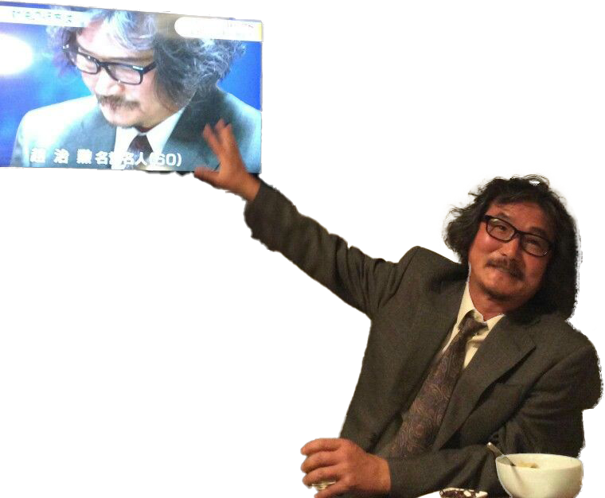
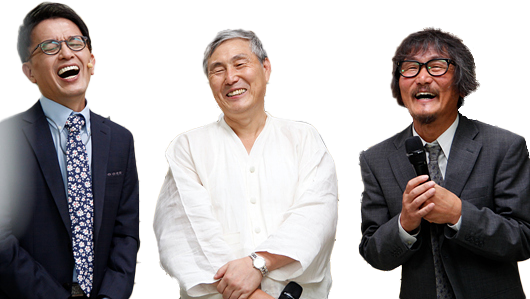
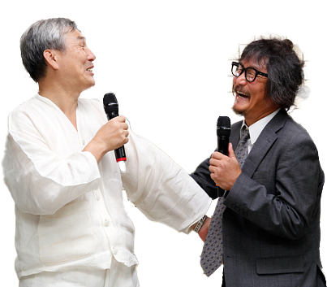
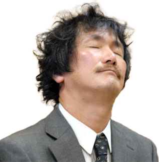
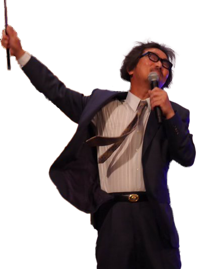
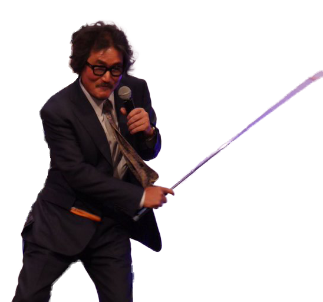
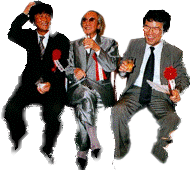
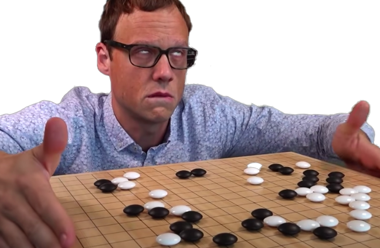
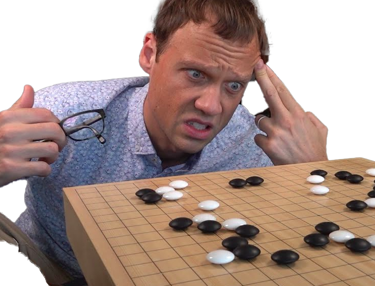

Cho Chikun 9p: the OG Go Meme Saint, (in)famous for his
teasuji.
Nestor de la Palissade: the OG French Go meme. You might know him from his
chef d'oeuvre: Get Strong at Gote. I've written an
article in Portuguese about him
.
Shut Up and Sit Down: one of the best board game channels and websites out there. Their
reviews are quality content and very entertaining. They've even
ventured into making
a review of Go...
You can download all of the stickers
, in a
zip file.
Besides collecting the images, in order to create the stickers I've
also:
used GIMP — free and open
source software — to mask everything except the important parts
of the images with transparency — I know, I know, not world
class work.
used the
Sticker Maker
app to create the final package, which is imported by Whatsapp. I wish
Whatsapp had an easier way of dealing with this step because these
sticker creation apps are simply ad plagues, this one specifically is
thankfully the least worst.
Don't hesitate to contact me if you have improvements on this
collection, I'll gladly update it here and share it with others, with
respective acknowledgment, of course.
I've also created a gif and a video with Aragaki Shun's
memes:
If you would like to look at or download the images individually, here
they are, simple pngs which could be used elsewhere, not
only on Whatsapp:









There's also my "tewari scream" from
, which also happens to be
: